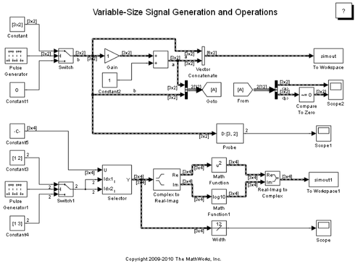

Variable-Size Signal Basic Operations
The purpose of this demo is to introduce you to the basic operations associated with variable-size signals. The following model shows you how to generate variable-size signals, and some of the operations that you can apply to them.
Contents
About This Demo
Open the demo model sldemo_varsize_basic. This model contains several blocks that support variable-size signals.
Common ways of generating variable-size signals are:
- Use a Switch block with a different size signal at each input port.
- Use a Selector block and allow the size selection index to change over time.
Eighty blocks can operate with variable-size signals including the Gain block, the Sum block, the Math Function block, the Matrix Concatenate block, and the Bus Creator block. In addition, you can probe variable-size signals using the Width or the Probe block, display variable-size signals on Scope blocks and save variable-size signals to the workspace using the To Workspace block.
For a complete list of blocks that support variable-size signals, see "Simulink® Block Support for Variable-Size Signals" in the Simulink documentation.
